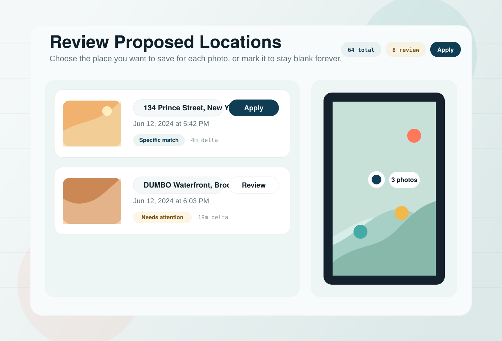
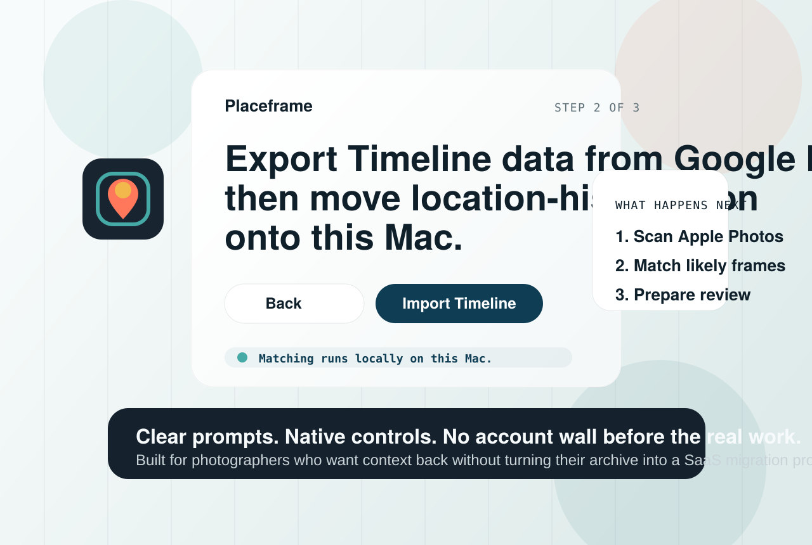
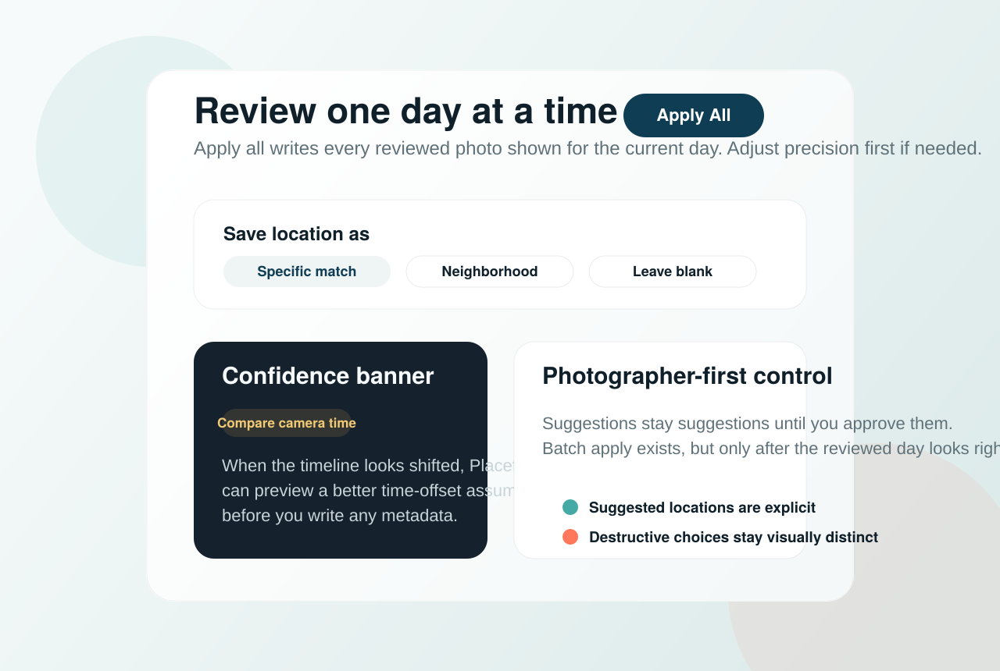

Matching stays on your Mac.
Imported Timeline data and review decisions are meant to stay local unless you explicitly turn on Apple services for richer labels.
Built for photographers who care where the shot happened.
Placeframe helps photographers bring missing location metadata back to Apple Photos by matching Google Timeline history on-device, then letting you review every suggestion before anything is written.
Questions or early-access notes: hello@placefra.me · Privacy policy



Imported Timeline data and review decisions are meant to stay local unless you explicitly turn on Apple services for richer labels.
This is not a generic cloud DAM shell. Placeframe is built around Apple Photos review and write-back.
Suggestions are separated from confirmed writes so photographers can inspect, reject, or tune precision before applying anything.
The project is already visible on GitHub, and launch updates can be requested at hello@placefra.me while the Mac App Store listing is prepared.
Why photographers care
When old imports lose GPS metadata, years of work start behaving like anonymous files. Placeframe is built for photographers who want that context back without surrendering their library to a cloud pipeline.
Backfill DSLR, mirrorless, or scanned work that landed in Apple Photos without place data.
Suggestions are separated from confirmed writes, so you always know what is proposed and what will change.
Your imported Timeline history and matching decisions stay on your Mac unless you explicitly enable Apple services for richer labels.
Three deliberate steps
The workflow is intentionally calm: bring in a Timeline export, review proposed matches day by day, then write only the locations you approve.
Placeframe opens with a native, plain-language import flow instead of a setup maze.
Browse one day at a time, compare map context, and see exactly how strong each suggestion looks.
Apply single selections or a whole reviewed day once the choices read the way you want them to read.
Who it is for
Recover the geography of years of shoots so places become searchable again.
Bring order to exports before handoff without bulk-writing unreviewed guesses.
Use a Mac-native tool that favors review, reversibility, and clear privacy boundaries.
Privacy and trust
Imported Timeline data and match decisions are processed on-device. There is no account system and no marketing analytics on the app workflow.
Apple map tiles may load while you inspect the map, and rich place labels use Apple geocoding only if you choose to enable that option.
Placeframe distinguishes between proposed matches and approved writes so photographers stay in control of their library.
“Suggestions are not truth.”
That product attitude shows up everywhere in the app: confidence badges, day-based review, map inspection, optional place-label enrichment, and one final moment of judgment before anything lands in Apple Photos.
Read the full privacy policyBefore launch
No. Timeline parsing and matching run locally on your Mac by default.
Yes. Placeframe is built around Apple Photos libraries and writes approved metadata back into Apple Photos locally.
Because privacy language should stay next to the real behavior. Rich place labels are optional, and map inspection can load Apple map tiles for the visible region.
Not yet. The marketing site is live now, and the Mac App Store listing is being prepared.
Stay in the loop
The release path is simple: ship the Mac App Store build, keep the privacy posture legible, and let photographers try it without theater.